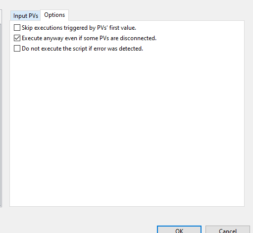

OPI Programming tips & limitations
Opening a new Opi
CSS can display one or more windows, each of which can be divided into multiple views, each of which can contain multiple tabs, so there is huge flexibility but CSS has its own ideas about how to do things, which introduce some annoying limitations.
CSS allows you to open a new opi in many locations:
In place of the current Opi
In a new window
As a new tab in the current view
As a new tab in the top, bottom, left or right views of the current window
What it does not allow you to do is to replace the contents of another view. Therefore you cannot have a window with navigation controls in the top view that change the opi shown in the main view. They can only create new tabs in the main view
Alternatively the opi can be shown in a linking container
Linking Containers
The contents of the linking container can be changed dynamically by setting the ‘opi_file’ property.
The macros seen by the contents of the container can be set by:
from org.csstudio.opibuilder.scriptUtil import DataUtil
...
macros = DataUtil.createMacrosInput(True)
macros.put('NAME', 'VALUE')
container.setPropertyValue('macros', macros)
but the new macros only take effect when a new opi is loaded. If the new opi has the same name as the previous one, nothing is loaded and the new macros do not take effect. To force a reload, set ‘opi_file’ to the empty string then back to its old value.
(Isabella: from within CSS scripts, it works by simply re-setting the ‘opi_file’ property with forcing the fire option set to true:
widgetController.setPropertyValue("opi_file", widgetController.getPropertyValue("opi_file"), true)
)
When an opi is displayed in a linking container, scripts on the opi display widget do not get run because the display widget is not loaded. The contents of the display widget instead become children of the linking container. If you want a script to run in these circumstances it has to hang off one of the child widgets.
The CSS object model as viewed from Python
This is largely undocumented. The help in CSS/BOY says little and Google can find little. The only way I was able to find out how to manipulate the actions on a button was to view the java source on GitHub. The Python objects simply expose the public Java methods.
It is possible to use any java module or method from python code in an OPI. For example, instead of:
# Note: this is BAD - do not do this!
sleep(1)
widget.doSomething()
which would block the UI thread for 1 second, we can import some CS-Studio and core Java classes from python directly, and do:
# Correct approach
from org.csstudio.ui.util.thread import UIBundlingThread
from java.lang import Thread, Runnable
from org.eclipse.swt.widgets import Display
currentDisplay = Display.getCurrent()
class WorkerThread(Runnable):
def run(self):
Thread.sleep(1000)
class UITask(Runnable):
def run(self):
widget.doSomething()
UIBundlingThread.getInstance().addRunnable(currentDisplay, UITask())
thread = Thread(WorkerThread(), "some_thread_name")
thread.start()
Which will not block the UI thread for 1 second, as it’s 1 second wait is in a different thread (it then uses UIBundlingThread.addRunnable to get back onto the UI thread once the wait is finished).
Changing actions
The list of actions on a button is:
actionList = myButton.getPropertyValue('actions').getActionsList()
This is a Java list which can be subscripted and has methods like add() and clear().
If you have an existing action, new write PV actions can be created:
action = sourceList[0].__class__()
action.setPropertyValue('pv_name', 'loc://myPV')
action.setPropertyValue('value', valueToSet)
action.setPropertyValue('description', 'What appears in the menu')
actionList.add(action)
For some reason new open opi action created in this way do not work, but existing open opi actions can be altered and added to a different button:
action.setPropertyValue('replace', 1)
action.setPropertyValue('description', 'What appears in the menu')
action.setPropertyValue('path', 'my.opi')
actionList.add(action)
In the synoptic view I have a hidden button with actions than can be reused.
Running a script on page load
You can make a script run on page load by setting it to trigger from a PV called loc://$(DID)_CONST_1(1) and making sure it executes even if there are errors.

Storing State
Occasionally it makes sense to store some state in the OPI, e.g. which traces the user has made visible on the OPI. To do this you can use local PVs of the form loc://MY_PV. These can be written and read to like normal PVs.
loc:// PVs get initialized to null, but you can provide an explicit initialization value by including it in parentheses e.g. loc://my_pv(123) would initialize loc://my_pv to 123.
Local PVs (prefixed with loc://) usually have application level scope, i.e. a local PV with the same name will have the same value from all OPIs within IBEX. While this can be useful (e.g. to share state between OPIs), it can also be problematic for OPIs where we expect to have multiple instances of the OPI open.
The $(DID) macro is a unique-per-opi-view identifier which can be inserted into local PV names to ensure that multiple instances of the same OPI do not conflict with each other.
Creating new widgets
Given an existing widget of the correct type, new widgets can be created and added to a container.
The following will create a new widget of the same type as Label0 and set some of its properties:
label = group.getWidget('Label0')
source = label.getModel()
model = source.__class__()
model.setName('NewLabel')
model.setX(6)
model.setY(142)
model.setWidth(163)
group.addChild(model)
The model has set and get methods for the widget properties, or group.getWidget('NewLabel') can be used to obtain the widget so its properties can be set using setPropertyValue().
The widget can be removed using group.removeChildByName('NewLabel')
Note that for dynamically create widgets that do not normally have click actions (e.g. the grouping containers that I use to fake transparent buttons), it seems to be impossible to hook an action to a left click but it is possible to add them to the right click menu.
Threading
Bear in mind that both scripts and rules run in the GUI thread this can lead to unresponsiveness if you are doing a lot of work in them. You can write multithreaded scripts, see the jaws_display.opi for an example of this.
Note that it is a programming error to call sleep or other similar functions directly in an OPI script - these will completely block the UI thread every time the script executes. Instead, use a threading pattern and only call sleep in a non-UI thread if you need an arbitrary wait in OPI scripts. UIBundlingThread.addRunnable can be used to get back onto the UI thread after the sleep is complete.
Utilities
Seven utility classes are provided, but there seems to be no way to get to some of them in the online help other than to know their names and search for them:
ConsoleUtil has methods for writing debug messages to the console.
from org.csstudio.opibuilder.scriptUtil import ConsoleUtil ConsoleUtil.writeInfo(value )
DataUtilhas thecreateMacrosInputmethod.FileUtilhas methods for reading and writing files and displaying an open file dialog. There is also asaveFileDialogmethod that has been omitted from the online help.GUIUtilhas a yes/no dialog and methods for going to full screen or compact modePVUtil!ScriptUtil
!WidgetUtil
Performance limitations
We have found that OPIs perform poorly on initial opening once you get past a few hundred widgets being rendered simultaneously.
At the time of writing, here are some representative numbers of widgets on a variety of OPIs. Note that widgets in tabs which are not shown don’t count as they don’t get rendered immediately.
Eurotherm: 58 widgets
ICE fridge (with complex schematic): 92 widgets
Reflectometry front panel: 135 widgets
CS-Studio “large” performance test: 200 widgets
Table of motors OPI attempt: 674 widgets - took ~15 seconds to open on NDXSCIDEMO
See also section below on improving the performance of rules, if your OPI contains significant numbers of rules (e.g. more than 10). If your OPI contains significant numbers of rules, you need to ensure that all rule conditions have an associated fast-path handler.
Implementing your own widgets in CS-Studio code
Note: this is a significant undertaking; check with other developers that this is the correct solution before going down this route
Firstly, you will need to import the CS-Studio code into eclipse by following the instructions here
The code for most widgets is defined in cs-studio\applications\opibuilder\opibuilder-plugins\org.csstudio.opibuilder.widget, you will need to import this project into eclipse if you haven’t already.
The code follows an MVVM-like pattern, where the mapping is:
xxxModel-> modelxxxEditPart-> viewmodelxxxFigure-> view
As an easy way to get started, I suggest copying the above 3 classes from the most similar widget type and then editing them to suit your needs.
To get your new widget to show up in CSS’ menus, it needs to be added to the extension point org.csstudio.opibuilder.widget in MANIFEST.MF.
To use a PV value, use a string with the special value $(pv_value). This gets substituted for the actual value at runtime.
Most figures are implemented using the draw2d framework, which is a graphics toolkit. In general it allows a higher level of flexibility than RCP for drawing arbitrary shapes etc, with the disadvantage that this additional flexibility makes it more complex. It is also possible to implement a figure using an RCP widget - see for example WebBrowserFigure in cs-studio\applications\opibuilder\opibuilder-plugins\org.csstudio.opibuilder.widgets.rcp.
Getting a macro value in a script
display.getMacroValue("MY_MACRO")
However, if your macro name is constant, it is better to use a local pv as a trigger for the script, which happens to be initialized to the value of the relevant macro. e.g. use a local PV like loc://$(DID)_some_name("$(MACRO)") - you can then use this as pvStr0 as usual in your script/rule.
Hotfixing an OPI
OPIs can be hotfixed on an instrument PC, with a built client, by modifying the OPI files in:
\<built client location, usually \instrument\apps\client_e4\>\plugins\uk.ac.stfc.isis.ibex.opis_1.0.0.SNAPSHOT\resources - this means you do not have to copy the entire client over, just the .opi file. You may also need to modify opi_info.xml, also in this folder, if you are adding a new OPI or modifying macros passed to an OPI.
Improving the runtime performance of rules in OPIs
As of ticket 7212, we are using a custom ScriptStore implementation in cs-studio called RhinoWithFastPathScriptStore. By default, CS-Studio uses a script store called RhinoScriptStore.
The primary difference is that RhinoWithFastPath will attempt to implement rules in pure java, without needing to call into javascript. This saves a significant amount of memory and CPU time. However, there are a number of limitations:
All conditions in a rule must be listed either in
FAST_PATH_EXPRESSIONSinRhinoWithFastPathScriptStore(in CS-Studio), or be added by the ibex client inaddFastPathHandlersin/uk.ac.stfc.isis.ibex.opis/src/uk/ac/stfc/isis/ibex/opis/Opi.javaNote that fast path expressions are an exact string match, so
pvInt0 == 0is a different fast-path condition topvInt0==0.
If a rule uses the “output expression” feature of CSS, then all output expressions must also be listed in
FAST_PATH_EXPRESSIONS(or added by the ibex client inOpi.javaas above). This is currently limited to output expressions of boolean type.Fast-path expressions can only use their linked PVs as variables - it is not currently possible to depend on the
widgetor macros directly. For example it is not currently possible to write a fast-path expression forwidget.getValue() == 1.
If the above conditions are true, javascript will be bypassed and a pure java implementation used instead. The pure java implementation is significantly more performant in terms of CPU and memory use. The javascript implementation (Rhino) is used as a fallback if the above conditions are not true. This approach lets us be fully compatible with all CS-Studio rules & .opi files (which can use completely arbitrary javascript fragments as their conditions), while still getting significant performance gains on most rules in practice.
You can generate a list of all rule expressions used in IBEX by running:
grep -roP "bool_exp=\".*?\"" | cut -d ":" -f 2 | sort | uniq -c | sort -nr
from a git bash terminal in ibex_gui/base/uk.ac.stfc.isis.ibex.opis/resources. The vast majority of our rules use a small number of simple expressions - such as pvInt0 == 0 - these are the expressions which are good candidates for a “fast-path” expression.
On OPIs which have had significant performance issues, such as the reflectometry OPI, all rule expressions should have an associated fast-path handler, and should not use the “output expression” feature of CS-Studio. This ensures that all rules in this OPI do not use the javascript rules implementation.
Checking which rules execute in JS
In /uk.ac.stfc.isis.ibex.opis/src/uk/ac/stfc/isis/ibex/opis/Opi.java, call RhinoWithFastPathScriptStore.setLogScriptsUsingJS(true). This will log the script content the first time a rule is loaded and executes via the slow (JS interpreter) path.
Forcing JS execution of all rules
If you need to execute all rules in JS (e.g. a major bug is found in RhinoWithFastPathScriptStore), it can be entirely disabled by editing org.csstudio.opibuilder/java_script_engine=RHINO_WITH_FAST_PATH to org.csstudio.opibuilder/java_script_engine=RHINO in /uk.ac.stfc.isis.ibex.e4.client/plugin_customization.ini.
Note that you will need to increase the GUI heap size parameter if this is done, particularly on reflectometers, as the reflectometry OPI uses huge numbers of rules which cause excessive memory consumption under javascript.
Importing scripts into other scripts
If you need complicated scripts with imports - first consider the design of your OPI. Most OPIs should aim not to require any scripts at all, for example by moving logic into the IOC layer.
However, in some cases it is useful to be able to create generic scripts and import them into other scripts. The CS-Studio Jython instance does not allow access to __file__, so it is not always possible to add a known import directory to python’s path.
The workaround is to use something like:
from java.lang.System import getProperty as getJavaSystemProperty
import sys
import os
resources_dir = getJavaSystemProperty("ibex.opis.resources_directory")
sys.path.append(os.path.join(resources_dir, "HV", "Scripts"))
# ... import from HV.Scripts.something
The ibex.opis.resources_directory property is set from Java before any OPIs load in base/uk.ac.stfc.isis.ibex.opis/src/uk/ac/stfc/isis/ibex/opis/Opi.java
Note that hard-coding a path like c:\instrument\dev\ibex_gui\...\resources would fail on an instrument as the client will be installed in a different location - so this system property must be used instead.
Note that bi and mbbi records that you are trying to use with an LED in an OPI will not work unless the values are 0 and 1. This is because the LED ignores the bit and ENUM settings and On state and Off State and goes of ONLY the PVName attribute.